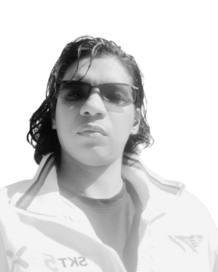

×
ESC · click outside to close
I build the systems, factions, biologies, and moral architectures that make fictional worlds feel real — then write the documents that let other creators live and create inside them.

I'm a narrative designer, author, and digital strategist based in Valencia, Venezuela, with over eight years of experience at the intersection of storytelling, game production, and marketing. I have worked as COO at EVE Games Studios, Game Designer at Hello Monster, and Director of Operations at Fusion Esports — roles that gave me a deep understanding of how narratives function as live products within development pipelines.
My creative practice centers on narrative systems design: building the underlying logic — magical biology, technological hierarchies, faction philosophies, species ecologies — that gives a world coherence and makes its stories feel earned rather than arbitrary. I document this work in comprehensive narrative bibles designed for cross-disciplinary teams of writers, designers, artists, and game masters.
I also hold a degree in Cinematographic Screenwriting from the Centro Nacional Autónomo de Cinematografía (CNAC), am a published author, and have taught at the Universidad Bolivariana de Venezuela — a combination that shapes how I write for audiences across every generation.
The Five Pillars — Core World Philosophy
All magic requires specific nutrients that the Magic Circuits convert into etheric substrate. Without nutrients → the Circuits cannibalize the mage's own tissues.
First Immutable Law: A mage who does not understand their spell does not control it — they unleash it. Knowledge matters more than power.
What a being cannot do is narratively richer than what it can. Dragohism — the most powerful magic — has one absolute vulnerability: silence.
Dragons build power for the nest; humans build it for themselves. Neither philosophy is superior — but they are incompatible enough to require active work and explicit agreements to collaborate.
The Fourth Immutable Law: there is always a weakness, a limit, a point of failure. The gods Dago and Nasgu had absolute power — and their greatest vulnerability was exactly that power.
"Year 1240 C.E. is the year before everything changes. The stories that occur in it are the stories of people who do not yet know they are in that year. That specific ignorance — of being on the threshold without knowing it is a threshold — is the gift that Rudon's present gives the creator."— The Scriptures of Rudon, Adaptation Guide for Creators
Species Catalog Sample (30+ species designed)
| Species | Morphology | Cultural Note | Narrative Function |
|---|---|---|---|
| Eoalo | Luminous spheroids, 0.5–3m, light appendages | Trifrequential communication; only Espers perceive the third frequency | The most advanced species. Never defeated. Never understood. Their warnings are always cryptic and always precise. |
| Uteo | Silicon-based, crystalline mineral | Their entire civilization is frozen in collective sacrifice to contain the Entity | One representative awake. Millions asleep underfoot. "La Joya" has been emitting a continuous scream for 3,000 years. |
| Esmiyuga | Vermiform, obligate symbiosis | Integrates into the host's nervous system; separation kills the host | The Path of the Bond: a religion built around choosing a symbiotic tie you can never undo. |
| Maint | Humanoid, horns, hip-mounted wings, prehensile tail | Real atmospheric flight. Isolated from the universe when their wormhole closed. | A civilization isolated indefinitely. The tragedy of Yejekia Ben Ari: her daughter is an Esper. What does she sacrifice to save her? |
| Wilstoide | Reptiloid bipeds, bone crests that grow for life | Elders have massive bone "helmets"; they are living libraries venerated above all | The supreme antagonist empire. Their greatest fear: the Condemned to the Broken Quill — total erasure from all records. |
"Millions. The entire planet is an organism. And it has been asleep for three thousand years beneath the feet of a civilization that never knew it was walking over people."— Blue Planet Universe, description of the Uteo people and La Joya
15 Vampire Clans with their own Concept, Alignment, and Ritual — Sample
The most numerous and organized. Members use their Concept to dominate territories, creating personality cults. Governance rotates between three lords every 10 years.
Led by Dimitri Vurdalok — a former member of the hunters' own bloodline. Primary target of the entire Vonderburg clan. Open Hunt authorized at all times.
The second most numerous. They live infiltrated in the highest spheres of society. Their elders control mafias, banks, and corporations. Natural enemies of the Carniolas.
Reclusive, living in deep forests. Their Ritual transforms a newly converted vampire into an animal companion — with whom many develop romantic bonds.
Serve occult cults and dark sects with strong ties to demons. One lord is a direct servant of the demon Belial. Protocol: immediate retreat and specialist reinforcement.
Scholarly and philosophical. Headquartered on the island of Lesbos. The only clan to openly serve a primordial Yuán zǔ vampire. Maturation ritual: defend an academic thesis.
The central mechanical tension: vampires are cursed with an insatiable need to drink human blood — but doing so degrades them, costing power and status. A Yuán zǔ (primordial) who yields becomes a lesser Lord. Recovery requires centuries of complete abstinence.
This creates a built-in internal conflict for every vampire regardless of alignment: their greatest temptation is also the thing that makes them weaker and easier to kill.
"We are not killers; we are surgeons removing a cancer. Discipline is what separates us from the monsters."— Vonderburg Codex, Part III: Hunter Legislation and Ethics
Every system in my worlds operates the same way for everyone. Rudon's Immutable Laws apply to gods and students alike. Warp physics apply whether you are the Federation or a mercenary. Internal rules are non-negotiable — and that is what creates trust in a fictional world.
No faction in any of my projects is simply evil. Rudon's Matte Dragons are right in the diagnosis and wrong in the response. The Federation imprisons Espers out of fear, not malice. The Vonderburg clan hunts the monster that was once their own blood. Complexity is structured, not vague.
My worlds don't contain stories — they generate them. Rudon's 20+ plot seeds each pull on a different systemic thread. The open arcs in Blue Planet (Q, the Maint Cluster, Academia, the AI factory) are designed to destabilize the world at any narrative moment the team decides.
A narrative bible is useless if only the author can navigate it. All three projects include explicit adaptation guides for creators, tone notes, sensory design references for illustrators and game masters, and visual guides for designers — written for cross-disciplinary teams.
Aprende a construir ecosistemas, facciones y magia con reglas y el oficio de escribir.
Ver Temario →